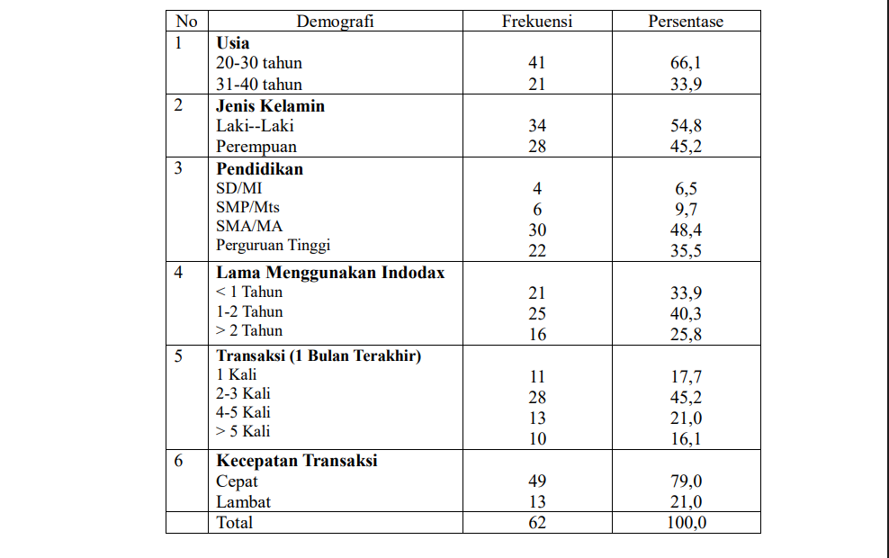
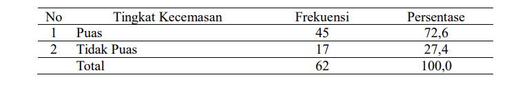

Indodax adalah platform pertukaran aset kripto terbesar di Indonesia yang didirikan pada tahun 2014. Aplikasi ini memungkinkan pengguna untuk membeli, menjual, dan menyimpan berbagai aset digital, termasuk Bitcoin dan Ethereum, menggunakan mata uang rupiah. Dalam industri aset kripto yang bergerak cepat dan sangat volatil, kecepatan transaksi menjadi faktor penting yang dapat memengaruhi pengalaman dan kepuasan pengguna.
Indodax beroperasi di bawah pengawasan BAPPEBTI, yang memberikan legalitas dan keamanan bagi penggunanya. Layanan yang ditawarkan Indodax mencakup trading spot antara aset kripto dan rupiah, dompet digital untuk penyimpanan aset, serta fitur keamanan seperti autentikasi dua faktor (2FA) dan verifikasi KYC (Know Your Customer).
Penelitian ini melibatkan 62 responden pengguna aplikasi Indodax. Analisis data terbagi menjadi univariat dan bivariat.
Mayoritas responden dalam penelitian ini berusia 20-30 tahun (66,1%) dan berjenis kelamin laki-laki (54,8%). Tingkat pendidikan terbanyak adalah SMA/MA (48,4%). Sebagian besar responden telah menggunakan Indodax selama 1-2 tahun (40,3%) dengan frekuensi transaksi 2-3 kali dalam sebulan terakhir (45,2%). Mayoritas responden (79,0%) menilai kecepatan transaksi pada aplikasi ini "cepat"

Tingkat Kepuasan Pengguna
Berdasarkan hasil penelitian, mayoritas responden menyatakan puas (72,6%), sementara 27,4% menyatakan tidak puas. Hal ini menunjukkan bahwa sebagian besar pengguna merasa sistem transaksi Indodax cukup cepat dan memuaskan

service quality oleh Parasuraman, Zeithaml, dan Berry (1988) juga mendukung temuan ini, di mana kecepatan layanan (responsiveness) adalah indikator penting kepuasan.
Hasil uji statistik Chi-Square menunjukkan nilai p-value = 0,032. Karena nilai ini lebih kecil dari nilai α = 0,05, dapat disimpulkan bahwa terdapat hubungan signifikan antara tingkat kepuasan dan kecepatan sistem transaksi pada aplikasi Indodax.
Menurut Peneliti
Dengan demikian, hasil penelitian ini memiliki landasan teoritis yang kuat dan dukungan empiris yang konsisten dari penelitian dalam negeri maupun luar negeri. Secara keseluruhan, kecepatan sistem transaksi terbukti menjadi faktor penting dalam membentuk kepuasan pengguna, dan peningkatan pada aspek ini akan memberikan dampak positif terhadap pengalaman, loyalitas, serta kepercayaan pengguna pada Indodax.
Menurut asumsi peneliti, kecepatan sistem transaksi pada aplikasi online Indodax merupakan faktor penting yang dapat meningkatkan tingkat kepuasan pengguna. Hal ini dikarenakan pada platform perdagangan aset kripto, setiap keterlambatan dalam pemrosesan transaksi dapat menimbulkan rasa tidak nyaman, kekhawatiran, bahkan kerugian finansial akibat volatilitas harga pasar. Kecepatan transaksi yang baik akan memberikan rasa aman, percaya diri, dan kenyamanan bagi pengguna dalam melakukan aktivitas jual-beli aset digital. Dengan sistem yang responsif, pengguna merasa lebih dihargai dan termotivasi untuk terus menggunakan platform Indodax.
Masa Depan Bersama AI
Di tengah dinamika pasar kripto, Indodax hadir sebagai jembatan yang menghubungkan Anda dengan masa depan keuangan digital. Bersama Indodax, Anda tidak hanya bertransaksi, tetapi juga membangun portofolio aset masa depan yang terpercaya.
Saran bagi peneliti
Bagi peneliti yang akan melakukan penelitian sejenis, disarankan untuk memperluas lingkup penelitian dengan menambahkan variabel lain, seperti keamanan sistem, kemudahan penggunaan aplikasi, serta kualitas layanan pelanggan. Hal ini bertujuan agar penelitian berikutnya dapat memberikan gambaran yang lebih komprehensif mengenai faktor-faktor yang memengaruhi kepuasan pengguna. Selain itu, penelitian juga dapat dilakukan pada platform perdagangan aset kripto lainnya untuk memperoleh perbandingan yang lebih luas, sehingga dapat diketahui strategi yang paling efektif dalam meningkatkan kepuasan pengguna di berbagai platform perdagangan aset digital.